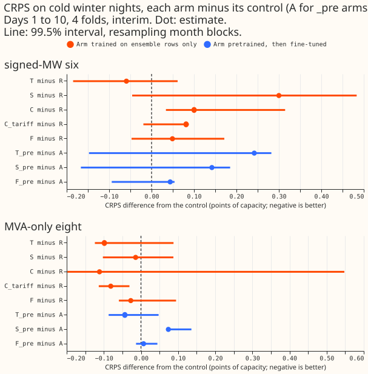
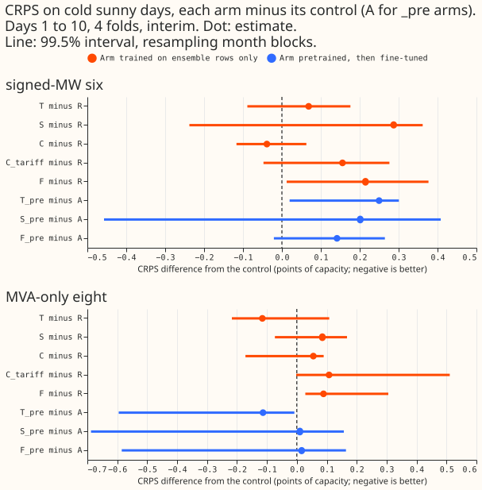
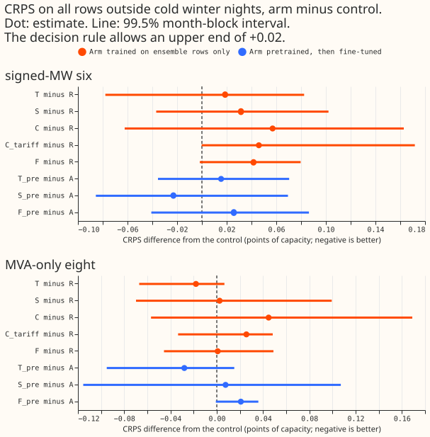
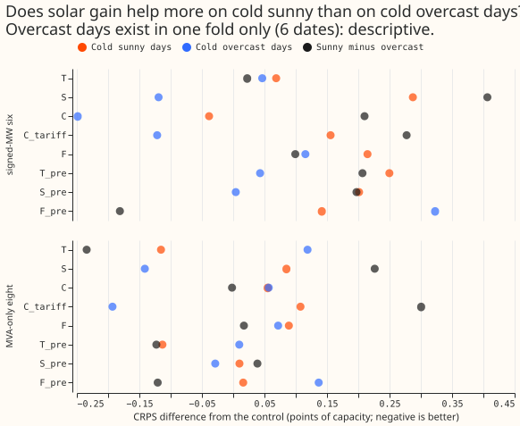
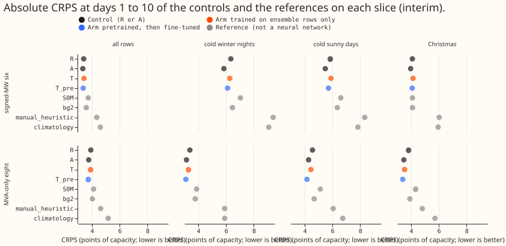
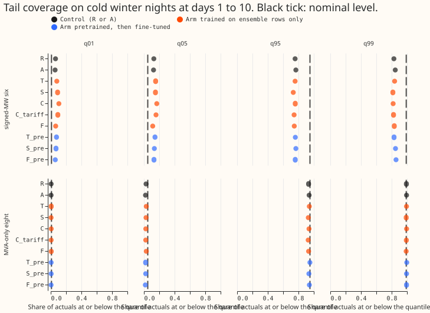
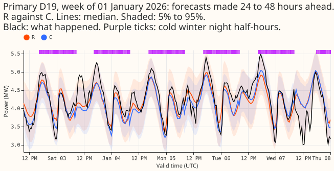
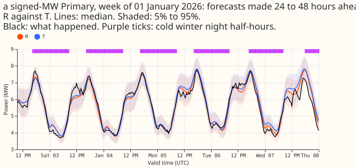
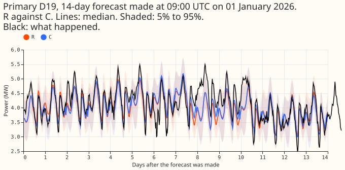
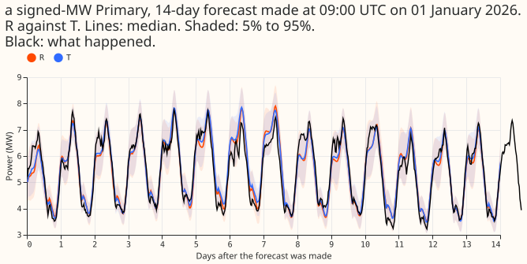

Do the input bundles of experiment 437 lower the neural network's error on cold winter nights, cold sunny days, Christmas, and heat waves, without raising it elsewhere?
Take-home message (here a bundle is a set of extra input columns added to the neural network of experiment 437, and "points" are percentage points of a Primary substation's effective capacity): the bundles did not help on the difficult rows either, but four test months cannot show a gain smaller than 0.12 to 0.26 points on these slices, so this is inconclusive, not a finding of no effect. Thermal lag was the only one of the eight arms that looked better on cold winter nights at both groups, and the signed-MW part of that gain came from two Primaries. The clearer lesson is about tails: on cold winter nights the signed-MW Primaries' upper quantiles are badly under-covering.
Question
CRPS is the continuous ranked probability score, a single error number for a probabilistic forecast. The signed-MW six and the MVA-only eight are the two groups of Primary substations by metering.
This re-score asks whether the input bundles that did not help on average help on the rows NGED cares about most. Experiment 437 added eight bundles of extra input columns to the pooled neural network and judged them on the annual mean. The maintainer expects thermal-lag columns and similar bundles to help mostly in winter, so a gain on cold winter nights, Christmas, or heat waves would be averaged away. No network is refitted: the stored forecasts of experiment 437 are scored again on slices of difficult rows.
Design
- Forecasts. The eight arms of experiment 437 (T, S, C, C_tariff, F, T_pre, S_pre, F_pre) and
controls
RandA, four folds, three seeds, loaded bye00437_score.load_frames. Experiment 437 folder is imported; nothing in it is edited. - Slices. Each is defined from the ENS-mean 2 m temperature and clear-sky index of the
forecast's own run, from solar elevation, and from the calendar, per Primary. Thresholds that are
percentiles come from the 730 days of runs before each fold's refit (runs exist from 2024-04-01,
so
the first fold's window is 18 months).
- Cold winter nights. Elevation below 0, local month November to March, ENS-mean temperature at or below the Primary's 10th percentile of winter-night ENS temperatures in the window.
- Cold sunny days and cold overcast days. Daily-mean ENS temperature below 5 °C; sunny if the daily-mean clear-sky index is at least 0.7, overcast if at most 0.3. Daylight half-hours only.
- Christmas and other bank holidays. 24 December to 2 January; and Good Friday to Easter Monday and the May and August bank holidays of England and Wales.
- Heat-wave days. Daily-maximum ENS temperature at or above the Primary's 95th percentile of June to August daily maxima, on at least 2 consecutive days of the same run.
- Counts before scoring (from
work/pre_output.txt, days are distinct local valid dates, rows are scored half-hours at days 1 to 10 summed over the folds and Primaries):
| Slice | Signed-MW six | MVA-only eight | Folds with rows |
|---|---|---|---|
| Cold winter nights | 11,793 rows, 21 days | 16,958 rows, 28 days | 3 |
| Cold sunny days | 7,005 rows, 24 days | 8,340 rows, 19 days | 3 |
| Cold overcast days | 971 rows, 6 days | 1,011 rows, 5 days | 1 (2026-01) |
| Christmas | 23,040 rows, 10 days | 30,720 rows, 10 days | 2 |
| Other bank holidays | 5,664 rows, 4 days | 7,552 rows, 4 days | 1 (2026-03) |
| Heat-wave days | 0 | 0 | 0 |
- Minimum detectable effect, from the seed spread, before any arm is scored (7-day valid-date
blocks; control
RorA; six or eight):
| Slice | R, six |
R, eight |
A, six |
A, eight |
|---|---|---|---|---|
| Cold winter nights | 0.23 | 0.16 | 0.21 | 0.12 |
| Cold sunny days | 0.19 | 0.18 | 0.13 | 0.26 |
Every cell is above the 0.05 bar, so no slice can detect a gain of 0.05: an arm meets the
decision rule only if its gain is several times the bar. A failure to meet it is not evidence of
no effect. The same figures over folds are smaller (0.02 to 0.16) but rest on three folds.
- Standing practices. Monthly refits (stored); cleaned data (flagged exact zeros dropped, 1,179
half-hours in the scored set); the D15 and D18 cut at 2025-03-01; stored controls reused and no
fit; tails reported. The four-fold screen labels every number interim.
- Figures. Per slice, a gain-with-interval chart for every arm; example winter-night week of
forecast, actual, control, and best arm; the sunny-minus-overcast gap of S and S_pre; a day-ahead
and a 14-day example forecast.
- Reviews. Draft pull request; fresh Sonnet code review before the arms are scored (it found
that the protocol's own christmas column overrode the registered mask, now fixed, which moved
the Christmas count from 9 to 10 dates; the six tested cells were unaffected); results
review with the audit triggers; write-up; prose review.
Caveats registered before scoring
- The folds hold no summer month, so heat waves cannot be scored at all.
- Christmas, other bank holidays, and cold overcast days have 10 dates or fewer and one or two folds, so they are descriptive.
- Winter nights come mostly from two folds (2025-12 and 2026-01), with 3 dates in 2026-03.
- The first fold's percentile window is 18 months, not 24, because ENS runs are stored from 2024-04-01.
Results
CRPS differences are arm minus control in points of capacity at days 1 to 10 (negative is better),
pooled over rows. The all-rows contrasts reproduce experiment 437's table exactly (gate in
work/score_output.txt). Every number is interim.
No tested cell advanced. Of the 10 tested cells, the gain bar of -0.05 was met only by T at
the signed-MW six (-0.059) and at the MVA-only eight (-0.099). Both cells fail the interval
condition (the
interval includes zero) and the fold condition (2 of 3 folds negative).


- Cold winter nights (21 dates at the six, 28 at the eight; folds 2025-12, 2026-01, 2026-03).
T: -0.059 (-0.185 to +0.062) at the six and -0.099 (-0.124 to +0.088) at the eight.T_pre: +0.242 and -0.043.F: +0.049 and -0.027.F_pre: +0.044 and +0.007. Intervals are 99.5%, month blocks (3 blocks, so the interval is the range of three fold values). - Cold sunny days (24 dates at the six).
S: +0.287 (-0.238 to +0.362),S_pre: +0.201 (-0.457 to +0.408). Solar gain did not help on cold sunny days; theSarm was worse in 2 of 3 folds. - Sunny minus overcast.
S: +0.41 (-0.23 to +0.76) at the six and +0.23 (-0.10 to +0.42) at the eight. Overcast days exist in one fold (6 dates), so the gap is descriptive and its sign (S helped on overcast days, not on sunny days) is the opposite of the solar-gain hypothesis. - Christmas (10 dates, two folds, descriptive).
Tat the eight: -0.28 (-0.31 to -0.22, 7-day blocks);Fat the six: +0.34. These intervals cover one run's weeks, not other refits. - Other bank holidays (4 dates, one fold) and cold overcast days (6 dates): descriptive; see
work/figure_tables/contrasts.parquet. - Heat waves. No rows, because no screen fold holds a summer month.
- Harm elsewhere. Outside the two primary slices every arm stays within +0.061 of its control (point estimates); no arm's q95 or q99 pinball loss rose by more than +0.027 outside the slice.


Tails and absolute skill


- Signed-MW tails fail on cold winter nights.
Rcovers 75.6% at q95 and 82.9% at q99 on those half-hours (95% and 99% nominal), against 88.6% and 95.5% over all rows.Acovers 76.6% and 84.7%. At the MVA-only eight,Rcovers 93.2% and 99.2%, andA93.9% and 99.4%. - Absolute skill on cold winter nights (CRPS,
A,R, BG2,manual_heuristic,climatology): signed-MW six 5.84, 6.34, 6.46, 9.39, 9.08; MVA-only eight 3.14, 3.39, 3.78, 5.90, 5.90. The neural network beats the weekly XGBoost model (BG2) and both naive baselines on these rows at both groups.
Example forecasts




The week figures stitch day-ahead forecasts (24 to 48 hours ahead) and compare the control with the arm that scored best on cold winter nights at that group. The signed-MW Primary is not named.
Predictions
- P1 (T lowers cold-night CRPS by 0.05 to 0.30 at the eight, -0.20 to +0.10 at the six) is partly
supported.
Tfits both ranges (-0.099, -0.059);T_premisses both (-0.043, +0.242). - P2 (S lowers cold-sunny-day CRPS by 0.00 to 0.20 at the six) is not supported.
S+0.287,S_pre+0.201. - P3 (F within +-0.10 on cold nights) is supported in all four cells.
- P4 (outside every primary slice within +-0.06) is supported except one cell at +0.061 (
Coutside cold sunny days at the six). - P5 (no slice detects 0.05) is supported.
Checks
- Median forecast minus mean forecast: not available; the networks store quantiles only.
- Error of the median beside each CRPS contrast: same sign in all primary cells except
Sat the eight on cold winter nights (CRPS -0.014, median error +0.025; descriptive). - Triggers fired: the leave-one-Primary-out trigger (trigger 4) for
Ton cold winter nights at the six: dropping Primary D14 or D16 flips the sign (-0.059 to +0.039 or +0.123), and dropping Primary D10 takes it under the bar. The gain rests on Primaries D16 and D14, while D5 pulls the other way.T_preat the eight meets the bar if Primary D4 or D8 is dropped, and its sign never flips. No verdict changes. A fresh Sonnet agent re-derived the six headline cells and the masks of two Primaries from the stored forecasts and ENS tables, and all matched to 5 decimals. - Code review: a fresh Sonnet reviewer found that the protocol's own
christmascolumn overrode the registered mask, so the first Christmas counts were wrong (9 dates, not 10). It was fixed before any arm was scored; the six tested cells were unaffected. - Dropped half-hours: 1,179 flagged exact-zero half-hours are excluded from the scored set (as in experiment 437).
Caveats
- Three blocks make the interval degenerate. With 3 month blocks the 99.5% interval is the range of the three fold values, so condition 2 reduces to "all three folds negative" and conditions 2 and 3 are not independent.
- The slices are thin. Cold winter nights come mostly from 2025-12 and 2026-01; 2026-03 holds 3 dates. The first fold's percentile window is 18 months.
- Slice masks are ENS-mean based, so a night the ensemble mean calls cold may not be cold; ENS smoothing leaves few overcast days (6 dates).
- Absolute table weights Primaries equally, while the contrasts pool rows, so differences in the absolute table need not equal the contrasts on thin slices.
- Interval widths (7-day blocks) on Christmas and bank holidays describe one run's weeks only.
What to try next
- Recalibrate cold-night tails at the signed-MW six (widen or condition the uncertainty on a cold-night flag), since the coverage gap is far larger than any bundle's gain.
- Retest thermal lag (
T) on many more winter months, the only one of the eight arms that looked better on both groups.
Data used and where it lives
- Data. Experiment 437's stored forecasts (arms and controls, 4 folds, seeds 0 to 2), experiment 425's controls, and the stored ENS summaries; no new data.
- Code.
ml-experiments/00441-difficult-row-rescore-of-the-neural-demand-input-bundles/; it imports experiments 87, 377, 381, 396, 397, 407, 418, 425, and 437. - Tables and logs.
$DATA_PATH_INTERNAL/ml-experiments/00441-difficult-row-rescore-of-the-neural-demand-input-bundles/work/(pre_output.txt,score_output.txt,figure_tables/,masks.parquet).